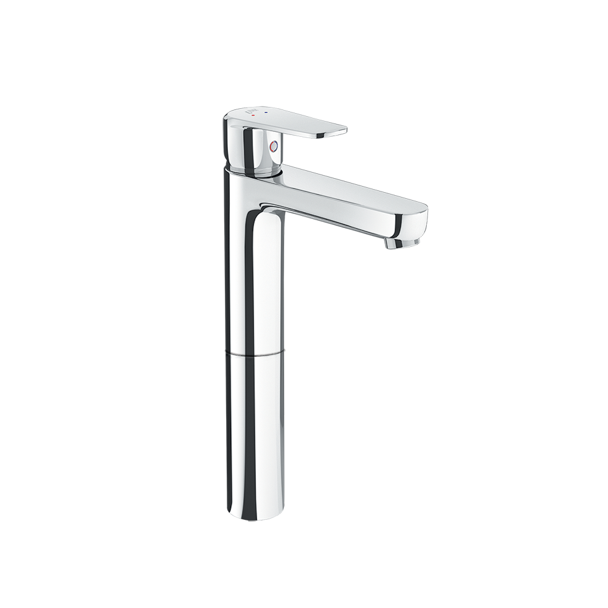
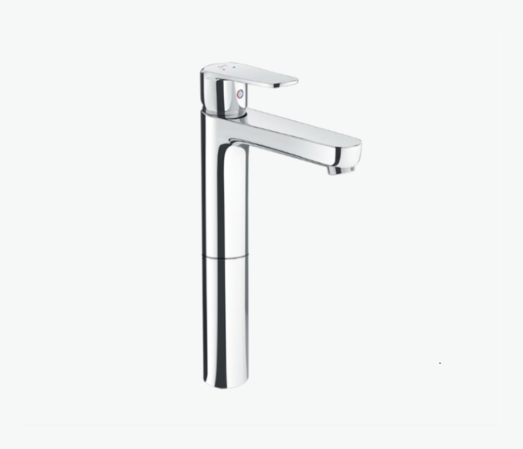
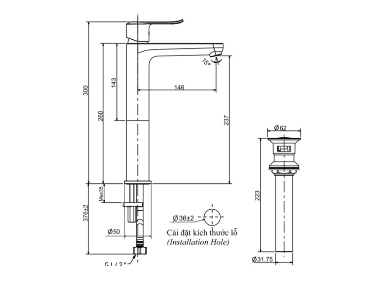

Sen vòi đơn LFV-2012SH là biểu tượng của phong cách hiện đại và sự tối giản, được thiết kế chuyên biệt làm vòi cổ cao để đi kèm với các mẫu chậu lavabo đặt bàn. Với kiểu dáng thanh mảnh, cao ráo, sản phẩm này không chỉ là một thiết bị tiện ích mà còn là một tác phẩm nghệ thuật, tạo điểm nhấn đẳng cấp cho không gian phòng tắm.Thiết kế sen vòi đơn LFV-2012SH: Điểm nhấn cho lavabo đặt bànThiết kế cổ cao chuyên dụng: Chiều cao vượt trội của thân vòi lavabo được tối ưu hóa để sử dụng hoàn hảo với các mẫu chậu lavabo đặt nổi trên bàn đá, đảm bảo khoảng cách lý tưởng từ vòi xuống chậu, mang lại trải nghiệm sử dụng thoải mái và sang trọng.Kiểu dáng Hình khối tối giản: Thân vòi thon gọn, kết hợp với tay gạt và đầu vòi phẳng, vuông vắn tạo nên một tổng thể thanh lịch và mạnh mẽ, rất phù hợp với xu hướng nội thất hiện đại.Bề mặt mạ Crôm/Niken sáng bóng: Lớp mạ Cr/Ni chất lượng cao giúp toàn bộ bề mặt vòi phản chiếu ánh sáng, luôn sáng bóng như gương và dễ dàng vệ sinh, duy trì vẻ đẹp lâu dài.Van điều khiển Ceramic với độ bền caoVòi nước nóng lạnh LFV-2012SH được trang bị van Ceramic (van điều khiển bằng sứ). Lõi van sứ là yếu tố then chốt giúp vòi hoạt động chính xác, êm ái, chịu được nhiệt độ và áp lực lớn, từ đó tăng độ bền và ngăn chặn rò rỉ nước hiệu quả.Lớp mạ Cr/Ni chất lượng, cao cấpVòi được mạ Lớp Crom/Niken (Cr/Ni) chất lượng cao, đảm bảo khả năng chống oxy hóa và chống ăn mòn tuyệt đối trong môi trường phòng tắm ẩm ướt. Lớp mạ dày dặn giúp vòi giữ được vẻ sáng bóng và tính thẩm mỹ trong nhiều năm.Kết cấu vững chắc, tạo dòng chảy ổn địnhKết cấu bên trong vững vàng đảm bảo vòi đứng vững chắc trên bàn đá, không bị lung lay trong quá trình sử dụng.Vòi hoạt động hiệu quả trong dải áp lực nước tiêu chuẩn 0.05 - 0.75 MPa , cung cấp dòng chảy nóng lạnh ổn định và mạnh mẽVideo giới thiệu vòi chậu INAXBản vẽ sen vòi đơn LFV-2012SHHướng dẫn lắp đặt LFV-2012SH: User manual_UM-0188_LFV-2012SH_V2_2020Sep24.pdfThông số kỹ thuậtChất liệuĐồng thau mạ Crom-NikenLoạiVòi chậu nóng lạnhKích thước-Thiết kế- Tay gạt dẹt - Thiết kế cổ cao chuyên biệt. - Dùng cho lavabo đặt bànThương hiệuINAXTính năng- Van Ceramic với độ bền cao - Van sứ có khả năng chịu nhiệt và chịu áp lực tốt - Áp lực nước cao: 0.05 - 0.75 MPa - Kết cấu vững vàng, chống bám bẩn, dễ vệ sinhMàu sắc-Khác- Bao gồm trụ xả (Không bao gồm ống thải chữ P) - Hotline tư vấn và bảo hành: 18006633
Sen vòi đơn LFV-2012SH
Vòi chậu thương hiệu INAX.
Đã cập nhật danh sách yêu thích.
DANH MỤC: Vòi chậu
MÃ SẢN PHẨM: LFV-2012SH
DEPTH: mm
HEIGHT: mm
WIDTH: mm
Sen vòi đơn LFV-2012SH là biểu tượng của phong cách hiện đại và sự tối giản, được thiết kế chuyên biệt làm vòi cổ cao để đi kèm với các mẫu chậu lavabo đặt bàn. Với kiểu dáng thanh mảnh, cao ráo, sản phẩm này không chỉ là một thiết bị tiện ích mà còn là một tác phẩm nghệ thuật, tạo điểm nhấn đẳng cấp cho không gian phòng tắm.Thiết kế sen vòi đơn LFV-2012SH: Điểm nhấn cho lavabo đặt bànThiết kế cổ cao chuyên dụng: Chiều cao vượt trội của thân vòi lavabo được tối ưu hóa để sử dụng hoàn hảo với các mẫu chậu lavabo đặt nổi trên bàn đá, đảm bảo khoảng cách lý tưởng từ vòi xuống chậu, mang lại trải nghiệm sử dụng thoải mái và sang trọng.Kiểu dáng Hình khối tối giản: Thân vòi thon gọn, kết hợp với tay gạt và đầu vòi phẳng, vuông vắn tạo nên một tổng thể thanh lịch và mạnh mẽ, rất phù hợp với xu hướng nội thất hiện đại.Bề mặt mạ Crôm/Niken sáng bóng: Lớp mạ Cr/Ni chất lượng cao giúp toàn bộ bề mặt vòi phản chiếu ánh sáng, luôn sáng bóng như gương và dễ dàng vệ sinh, duy trì vẻ đẹp lâu dài.Van điều khiển Ceramic với độ bền caoVòi nước nóng lạnh LFV-2012SH được trang bị van Ceramic (van điều khiển bằng sứ). Lõi van sứ là yếu tố then chốt giúp vòi hoạt động chính xác, êm ái, chịu được nhiệt độ và áp lực lớn, từ đó tăng độ bền và ngăn chặn rò rỉ nước hiệu quả.Lớp mạ Cr/Ni chất lượng, cao cấpVòi được mạ Lớp Crom/Niken (Cr/Ni) chất lượng cao, đảm bảo khả năng chống oxy hóa và chống ăn mòn tuyệt đối trong môi trường phòng tắm ẩm ướt. Lớp mạ dày dặn giúp vòi giữ được vẻ sáng bóng và tính thẩm mỹ trong nhiều năm.Kết cấu vững chắc, tạo dòng chảy ổn địnhKết cấu bên trong vững vàng đảm bảo vòi đứng vững chắc trên bàn đá, không bị lung lay trong quá trình sử dụng.Vòi hoạt động hiệu quả trong dải áp lực nước tiêu chuẩn 0.05 - 0.75 MPa , cung cấp dòng chảy nóng lạnh ổn định và mạnh mẽVideo giới thiệu vòi chậu INAXBản vẽ sen vòi đơn LFV-2012SHHướng dẫn lắp đặt LFV-2012SH: User manual_UM-0188_LFV-2012SH_V2_2020Sep24.pdfThông số kỹ thuậtChất liệuĐồng thau mạ Crom-NikenLoạiVòi chậu nóng lạnhKích thước-Thiết kế- Tay gạt dẹt - Thiết kế cổ cao chuyên biệt. - Dùng cho lavabo đặt bànThương hiệuINAXTính năng- Van Ceramic với độ bền cao - Van sứ có khả năng chịu nhiệt và chịu áp lực tốt - Áp lực nước cao: 0.05 - 0.75 MPa - Kết cấu vững vàng, chống bám bẩn, dễ vệ sinhMàu sắc-Khác- Bao gồm trụ xả (Không bao gồm ống thải chữ P) - Hotline tư vấn và bảo hành: 18006633
DANH MỤC: Vòi chậu
MÃ SẢN PHẨM: LFV-2012SH
DEPTH: mm
HEIGHT: mm
WIDTH: mm